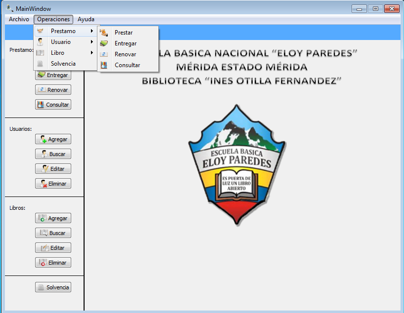
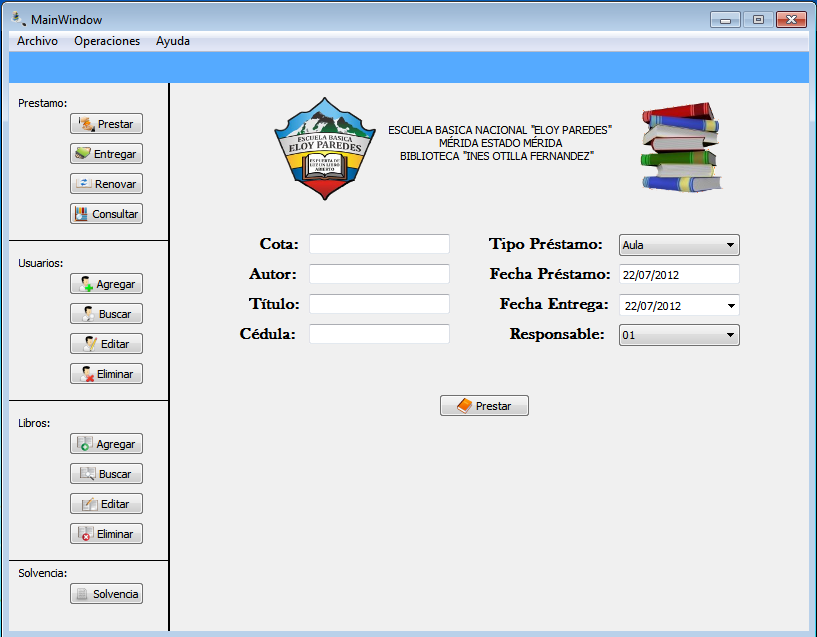

Para realizar la operación de realizar un préstamo de un libro existen dos forma de realizar dicha operación:
Figura: Menu Operaciones -> Prestamo

Una vez seleccionada la opción de prestar, debe llenar el formulario que se le muestra en la siguiente figura. Una vez completado el formulario, le damos al boton prestar, si el libro no tiene disponibilidad aparecera un error en caso contrario el préstamo se realizará de manera satifactoria.
